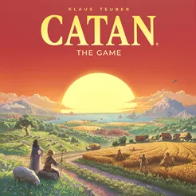
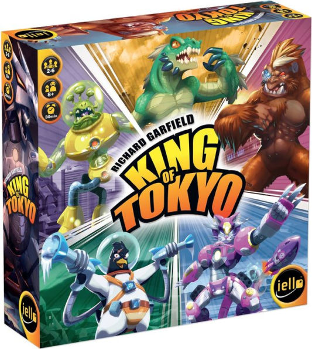
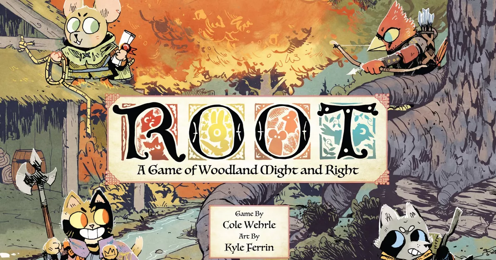

My Favorite Games
Settlers of Catan

- 3-4 Players.
- 60 minutes.
- Classic "euro-game", centered around clear rules, replayability, clean gameplay loops.
- One of the most popular starter board games. Easy to learn, though not lacking depth.
- Has many expansions that change gameplay and increase player numbers.
King of Tokyo

- 2-6 Players.
- 30 minutes.
- Player vs. player game with elimination.
- Quick, easy to learn, low rules.
- Good for introducing mid-sized groups to board games.
Root

From Root's website:
Root is a game of woodland might and right. Stalk the woods as one of the Vagabonds, seize the initiative with the Eyrie birds of prey, rule over your subjects as the Marquise de Cat, or command the Woodland Alliance to create a new order. With creatures and cunning, you'll rule a fantastic forest kingdom in the ultimate asymmetric board game of adventure and war.
- 2-4 Players.
- 60 - 90 minutes (after confidently learning the game).
- Wargame with fun aesthetics and unique roles per player.
- HIGH complexity, hard to learn.
- Fantastic game to learn and improve at over a long time with a dedicated group of friends.